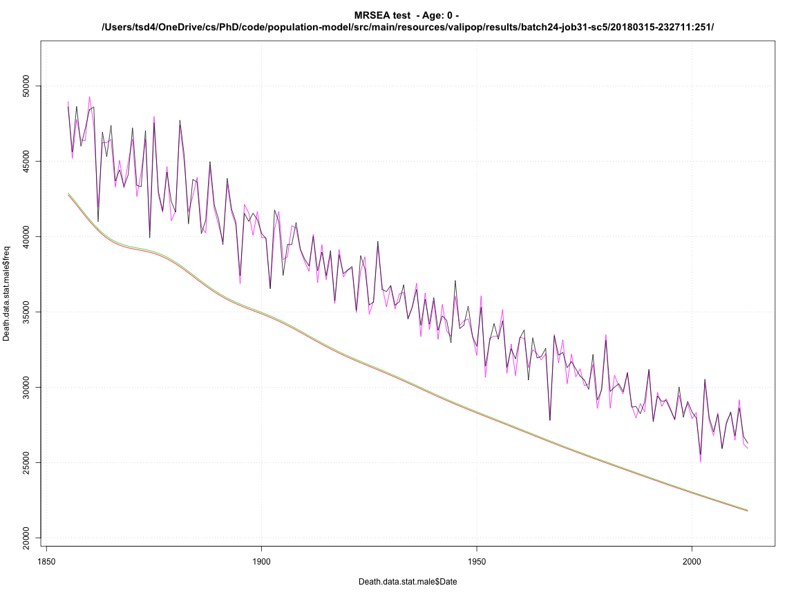
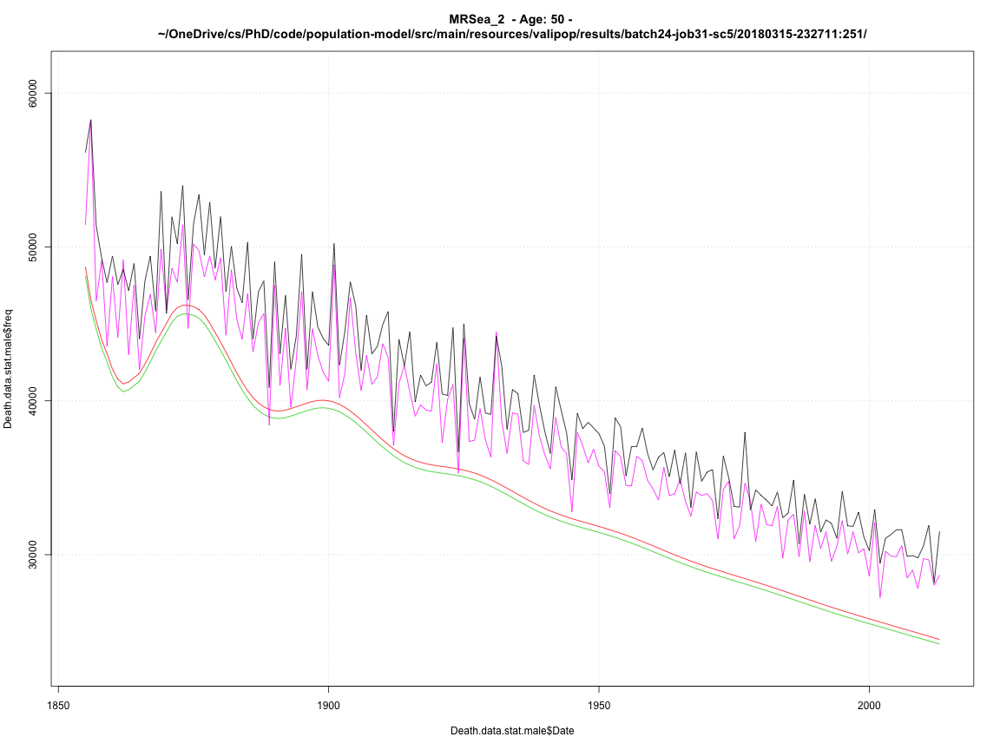

source("id-funtions.R") obirth.ids1 <- addCohortIDs.ob(obirth) obirth.ids2 <- addCohortIDs.ob2(obirth) par(mfrow = c(1,3)) source("geeglm-functions.R") obSatGEEGLM(obirth.ids1)
## ## Call: ## geeglm(formula = formula, data = in.data, id = idvar, corstr = "ar1") ## ## Coefficients: ## Estimate Std.err Wald Pr(>|W|) ## (Intercept) 9.33e+04 5.59e+03 278.22 <2e-16 *** ## Date -4.27e+01 2.88e+00 220.22 <2e-16 *** ## Age -2.05e+03 1.79e+02 130.83 <2e-16 *** ## NPCIAP1 -1.05e+05 6.75e+03 242.30 <2e-16 *** ## NPCIAP2 -9.26e+04 5.60e+03 274.01 <2e-16 *** ## NPCIAP3 -9.86e+04 5.69e+03 300.11 <2e-16 *** ## NPCIAP4+ -1.06e+05 5.69e+03 346.37 <2e-16 *** ## CIYYES -8.66e+04 5.61e+03 238.88 <2e-16 *** ## SourceSTAT -5.43e+02 7.46e+03 0.01 0.94 ## Date:Age 9.44e-01 9.21e-02 105.16 <2e-16 *** ## Date:NPCIAP1 4.85e+01 3.47e+00 195.13 <2e-16 *** ## Date:NPCIAP2 4.24e+01 2.88e+00 217.09 <2e-16 *** ## Date:NPCIAP3 4.51e+01 2.93e+00 237.97 <2e-16 *** ## Date:NPCIAP4+ 4.85e+01 2.93e+00 273.98 <2e-16 *** ## Age:NPCIAP1 3.39e+03 2.16e+02 245.98 <2e-16 *** ## Age:NPCIAP2 2.04e+03 1.79e+02 129.57 <2e-16 *** ## Age:NPCIAP3 2.42e+03 1.84e+02 172.72 <2e-16 *** ## Age:NPCIAP4+ 2.71e+03 1.82e+02 221.44 <2e-16 *** ## Date:CIYYES 3.97e+01 2.88e+00 189.52 <2e-16 *** ## Age:CIYYES 1.90e+03 1.80e+02 111.90 <2e-16 *** ## NPCIAP1:CIYYES 9.97e+04 6.76e+03 217.32 <2e-16 *** ## NPCIAP2:CIYYES 8.65e+04 5.62e+03 236.82 <2e-16 *** ## NPCIAP3:CIYYES 9.26e+04 5.70e+03 263.62 <2e-16 *** ## NPCIAP4+:CIYYES 9.95e+04 5.70e+03 304.17 <2e-16 *** ## Date:SourceSTAT -4.17e-01 3.84e+00 0.01 0.91 ## Age:SourceSTAT 8.16e+01 2.29e+02 0.13 0.72 ## NPCIAP1:SourceSTAT 4.51e+03 9.05e+03 0.25 0.62 ## NPCIAP2:SourceSTAT 2.39e+03 7.46e+03 0.10 0.75 ## NPCIAP3:SourceSTAT 2.32e+02 7.58e+03 0.00 0.98 ## NPCIAP4+:SourceSTAT 7.45e+02 7.58e+03 0.01 0.92 ## CIYYES:SourceSTAT 5.41e+02 7.47e+03 0.01 0.94 ## Date:Age:NPCIAP1 -1.56e+00 1.11e-01 198.23 <2e-16 *** ## Date:Age:NPCIAP2 -9.41e-01 9.21e-02 104.27 <2e-16 *** ## Date:Age:NPCIAP3 -1.12e+00 9.47e-02 138.59 <2e-16 *** ## Date:Age:NPCIAP4+ -1.25e+00 9.37e-02 176.89 <2e-16 *** ## Date:Age:CIYYES -8.76e-01 9.22e-02 90.16 <2e-16 *** ## Date:NPCIAP1:CIYYES -4.60e+01 3.48e+00 175.26 <2e-16 *** ## Date:NPCIAP2:CIYYES -3.96e+01 2.89e+00 187.64 <2e-16 *** ## Date:NPCIAP3:CIYYES -4.24e+01 2.93e+00 209.22 <2e-16 *** ## Date:NPCIAP4+:CIYYES -4.55e+01 2.93e+00 240.94 <2e-16 *** ## Age:NPCIAP1:CIYYES -3.26e+03 2.17e+02 226.79 <2e-16 *** ## Age:NPCIAP2:CIYYES -1.89e+03 1.80e+02 110.29 <2e-16 *** ## Age:NPCIAP3:CIYYES -2.28e+03 1.85e+02 152.50 <2e-16 *** ## Age:NPCIAP4+:CIYYES -2.56e+03 1.83e+02 196.99 <2e-16 *** ## Date:Age:SourceSTAT -2.37e-02 1.18e-01 0.04 0.84 ## Date:NPCIAP1:SourceSTAT -1.44e+00 4.65e+00 0.10 0.76 ## Date:NPCIAP2:SourceSTAT -4.96e-01 3.84e+00 0.02 0.90 ## Date:NPCIAP3:SourceSTAT 6.04e-01 3.90e+00 0.02 0.88 ## Date:NPCIAP4+:SourceSTAT 4.44e-01 3.90e+00 0.01 0.91 ## Age:NPCIAP1:SourceSTAT -2.22e+02 2.76e+02 0.65 0.42 ## Age:NPCIAP2:SourceSTAT -1.28e+02 2.29e+02 0.31 0.58 ## Age:NPCIAP3:SourceSTAT -5.83e+01 2.34e+02 0.06 0.80 ## Age:NPCIAP4+:SourceSTAT -1.03e+02 2.33e+02 0.19 0.66 ## Date:CIYYES:SourceSTAT 3.56e-01 3.84e+00 0.01 0.93 ## Age:CIYYES:SourceSTAT -7.85e+01 2.29e+02 0.12 0.73 ## NPCIAP1:CIYYES:SourceSTAT -4.42e+03 9.06e+03 0.24 0.63 ## NPCIAP2:CIYYES:SourceSTAT -2.06e+03 7.49e+03 0.08 0.78 ## NPCIAP3:CIYYES:SourceSTAT -5.38e+01 7.59e+03 0.00 0.99 ## NPCIAP4+:CIYYES:SourceSTAT -6.75e+02 7.60e+03 0.01 0.93 ## Date:Age:NPCIAP1:CIYYES 1.50e+00 1.11e-01 182.83 <2e-16 *** ## Date:Age:NPCIAP2:CIYYES 8.70e-01 9.23e-02 88.73 <2e-16 *** ## Date:Age:NPCIAP3:CIYYES 1.05e+00 9.49e-02 122.42 <2e-16 *** ## Date:Age:NPCIAP4+:CIYYES 1.18e+00 9.38e-02 157.49 <2e-16 *** ## Date:Age:NPCIAP1:SourceSTAT 8.09e-02 1.42e-01 0.33 0.57 ## Date:Age:NPCIAP2:SourceSTAT 4.60e-02 1.18e-01 0.15 0.70 ## Date:Age:NPCIAP3:SourceSTAT 9.81e-03 1.20e-01 0.01 0.94 ## Date:Age:NPCIAP4+:SourceSTAT 2.77e-02 1.20e-01 0.05 0.82 ## Date:Age:CIYYES:SourceSTAT 2.34e-02 1.18e-01 0.04 0.84 ## Date:NPCIAP1:CIYYES:SourceSTAT 1.44e+00 4.66e+00 0.10 0.76 ## Date:NPCIAP2:CIYYES:SourceSTAT 3.78e-01 3.85e+00 0.01 0.92 ## Date:NPCIAP3:CIYYES:SourceSTAT -6.45e-01 3.91e+00 0.03 0.87 ## Date:NPCIAP4+:CIYYES:SourceSTAT -4.23e-01 3.91e+00 0.01 0.91 ## Age:NPCIAP1:CIYYES:SourceSTAT 2.16e+02 2.76e+02 0.61 0.43 ## Age:NPCIAP2:CIYYES:SourceSTAT 1.16e+02 2.30e+02 0.25 0.62 ## Age:NPCIAP3:CIYYES:SourceSTAT 5.02e+01 2.35e+02 0.05 0.83 ## Age:NPCIAP4+:CIYYES:SourceSTAT 9.74e+01 2.33e+02 0.17 0.68 ## Date:Age:NPCIAP1:CIYYES:SourceSTAT -7.89e-02 1.42e-01 0.31 0.58 ## Date:Age:NPCIAP2:CIYYES:SourceSTAT -4.11e-02 1.18e-01 0.12 0.73 ## Date:Age:NPCIAP3:CIYYES:SourceSTAT -6.83e-03 1.21e-01 0.00 0.95 ## Date:Age:NPCIAP4+:CIYYES:SourceSTAT -2.62e-02 1.20e-01 0.05 0.83 ## --- ## Signif. codes: 0 '***' 0.001 '**' 0.01 '*' 0.05 '.' 0.1 ' ' 1 ## ## Estimated Scale Parameters: ## Estimate Std.err ## (Intercept) 363421 13673 ## ## Correlation: Structure = ar1 Link = identity ## ## Estimated Correlation Parameters: ## Estimate Std.err ## alpha 0.862 0.00481 ## Number of clusters: 3814 Maximum cluster size: 36


## ## Call: ## geeglm(formula = formula, data = in.data, id = idvar, corstr = "ar1") ## ## Coefficients: ## (Intercept) Date Age NPCIAP1 NPCIAP2 ## 9.33e+04 -4.27e+01 -2.05e+03 -1.05e+05 -9.26e+04 ## NPCIAP3 NPCIAP4+ CIYYES SourceSTAT Date:Age ## -9.86e+04 -1.06e+05 -8.66e+04 -5.43e+02 9.44e-01 ## Date:NPCIAP1 Date:NPCIAP2 Date:NPCIAP3 Date:NPCIAP4+ Age:NPCIAP1 ## 4.85e+01 4.24e+01 4.51e+01 4.85e+01 3.39e+03 ## Age:NPCIAP2 Age:NPCIAP3 Age:NPCIAP4+ Date:CIYYES Age:CIYYES ## 2.04e+03 2.42e+03 2.71e+03 3.97e+01 1.90e+03 ## NPCIAP1:CIYYES NPCIAP2:CIYYES NPCIAP3:CIYYES NPCIAP4+:CIYYES Date:SourceSTAT ## 9.97e+04 8.65e+04 9.26e+04 9.95e+04 -4.17e-01 ## Age:SourceSTAT NPCIAP1:SourceSTAT NPCIAP2:SourceSTAT NPCIAP3:SourceSTAT NPCIAP4+:SourceSTAT ## 8.16e+01 4.51e+03 2.39e+03 2.32e+02 7.45e+02 ## CIYYES:SourceSTAT Date:Age:NPCIAP1 Date:Age:NPCIAP2 Date:Age:NPCIAP3 Date:Age:NPCIAP4+ ## 5.41e+02 -1.56e+00 -9.41e-01 -1.12e+00 -1.25e+00 ## Date:Age:CIYYES Date:NPCIAP1:CIYYES Date:NPCIAP2:CIYYES Date:NPCIAP3:CIYYES Date:NPCIAP4+:CIYYES ## -8.76e-01 -4.60e+01 -3.96e+01 -4.24e+01 -4.55e+01 ## Age:NPCIAP1:CIYYES Age:NPCIAP2:CIYYES Age:NPCIAP3:CIYYES Age:NPCIAP4+:CIYYES Date:Age:SourceSTAT ## -3.26e+03 -1.89e+03 -2.28e+03 -2.56e+03 -2.37e-02 ## Date:NPCIAP1:SourceSTAT Date:NPCIAP2:SourceSTAT Date:NPCIAP3:SourceSTAT Date:NPCIAP4+:SourceSTAT Age:NPCIAP1:SourceSTAT ## -1.44e+00 -4.96e-01 6.04e-01 4.44e-01 -2.22e+02 ## Age:NPCIAP2:SourceSTAT Age:NPCIAP3:SourceSTAT Age:NPCIAP4+:SourceSTAT Date:CIYYES:SourceSTAT Age:CIYYES:SourceSTAT ## -1.28e+02 -5.83e+01 -1.03e+02 3.56e-01 -7.85e+01 ## NPCIAP1:CIYYES:SourceSTAT NPCIAP2:CIYYES:SourceSTAT NPCIAP3:CIYYES:SourceSTAT NPCIAP4+:CIYYES:SourceSTAT Date:Age:NPCIAP1:CIYYES ## -4.42e+03 -2.06e+03 -5.38e+01 -6.75e+02 1.50e+00 ## Date:Age:NPCIAP2:CIYYES Date:Age:NPCIAP3:CIYYES Date:Age:NPCIAP4+:CIYYES Date:Age:NPCIAP1:SourceSTAT Date:Age:NPCIAP2:SourceSTAT ## 8.70e-01 1.05e+00 1.18e+00 8.09e-02 4.60e-02 ## Date:Age:NPCIAP3:SourceSTAT Date:Age:NPCIAP4+:SourceSTAT Date:Age:CIYYES:SourceSTAT Date:NPCIAP1:CIYYES:SourceSTAT Date:NPCIAP2:CIYYES:SourceSTAT ## 9.81e-03 2.77e-02 2.34e-02 1.44e+00 3.78e-01 ## Date:NPCIAP3:CIYYES:SourceSTAT Date:NPCIAP4+:CIYYES:SourceSTAT Age:NPCIAP1:CIYYES:SourceSTAT Age:NPCIAP2:CIYYES:SourceSTAT Age:NPCIAP3:CIYYES:SourceSTAT ## -6.45e-01 -4.23e-01 2.16e+02 1.16e+02 5.02e+01 ## Age:NPCIAP4+:CIYYES:SourceSTAT Date:Age:NPCIAP1:CIYYES:SourceSTAT Date:Age:NPCIAP2:CIYYES:SourceSTAT Date:Age:NPCIAP3:CIYYES:SourceSTAT Date:Age:NPCIAP4+:CIYYES:SourceSTAT ## 9.74e+01 -7.89e-02 -4.11e-02 -6.83e-03 -2.62e-02 ## ## Degrees of Freedom: 98698 Total (i.e. Null); 98618 Residual ## ## Scale Link: identity ## Estimated Scale Parameters: [1] 363421 ## ## Correlation: Structure = ar1 Link = identity ## Estimated Correlation Parameters: ## alpha ## 0.862 ## ## Number of clusters: 3814 Maximum cluster size: 36
obSatGEEGLM(obirth.ids2)
## ## Call: ## geeglm(formula = formula, data = in.data, id = idvar, corstr = "ar1") ## ## Coefficients: ## Estimate Std.err Wald Pr(>|W|) ## (Intercept) 7.80e+04 5.07e+03 236.80 < 2e-16 *** ## Date -3.53e+01 2.61e+00 182.57 < 2e-16 *** ## Age -1.69e+03 1.64e+02 105.78 < 2e-16 *** ## NPCIAP1 -7.84e+04 8.27e+03 89.77 < 2e-16 *** ## NPCIAP2 -7.63e+04 5.11e+03 223.43 < 2e-16 *** ## NPCIAP3 -8.15e+04 5.81e+03 196.92 < 2e-16 *** ## NPCIAP4+ -9.10e+04 5.66e+03 258.84 < 2e-16 *** ## CIYYES -7.03e+04 5.05e+03 193.48 < 2e-16 *** ## SourceSTAT -6.99e+02 6.52e+03 0.01 0.91 ## Date:Age 7.62e-01 8.42e-02 81.83 < 2e-16 *** ## Date:NPCIAP1 3.55e+01 4.26e+00 69.64 < 2e-16 *** ## Date:NPCIAP2 3.45e+01 2.63e+00 172.29 < 2e-16 *** ## Date:NPCIAP3 3.68e+01 2.99e+00 151.73 < 2e-16 *** ## Date:NPCIAP4+ 4.11e+01 2.91e+00 199.27 < 2e-16 *** ## Age:NPCIAP1 2.76e+03 2.72e+02 103.54 < 2e-16 *** ## Age:NPCIAP2 1.65e+03 1.65e+02 100.42 < 2e-16 *** ## Age:NPCIAP3 2.02e+03 1.89e+02 114.36 < 2e-16 *** ## Age:NPCIAP4+ 2.37e+03 1.81e+02 171.11 < 2e-16 *** ## Date:CIYYES 3.18e+01 2.60e+00 149.40 < 2e-16 *** ## Age:CIYYES 1.50e+03 1.60e+02 87.89 < 2e-16 *** ## NPCIAP1:CIYYES 7.31e+04 8.17e+03 80.01 < 2e-16 *** ## NPCIAP2:CIYYES 7.08e+04 4.92e+03 207.00 < 2e-16 *** ## NPCIAP3:CIYYES 7.55e+04 5.68e+03 177.01 < 2e-16 *** ## NPCIAP4+:CIYYES 8.31e+04 5.54e+03 225.06 < 2e-16 *** ## Date:SourceSTAT -2.76e-01 3.35e+00 0.01 0.93 ## Age:SourceSTAT 7.16e+01 2.04e+02 0.12 0.73 ## NPCIAP1:SourceSTAT 5.58e+03 1.06e+04 0.28 0.60 ## NPCIAP2:SourceSTAT 5.33e+02 6.55e+03 0.01 0.94 ## NPCIAP3:SourceSTAT 9.29e+01 7.54e+03 0.00 0.99 ## NPCIAP4+:SourceSTAT 1.43e+03 7.35e+03 0.04 0.85 ## CIYYES:SourceSTAT 8.01e+02 6.44e+03 0.02 0.90 ## Date:Age:NPCIAP1 -1.25e+00 1.40e-01 80.39 < 2e-16 *** ## Date:Age:NPCIAP2 -7.45e-01 8.46e-02 77.68 < 2e-16 *** ## Date:Age:NPCIAP3 -9.14e-01 9.73e-02 88.32 < 2e-16 *** ## Date:Age:NPCIAP4+ -1.07e+00 9.31e-02 132.02 < 2e-16 *** ## Date:Age:CIYYES -6.80e-01 8.24e-02 68.09 < 2e-16 *** ## Date:NPCIAP1:CIYYES -3.31e+01 4.20e+00 62.16 3.2e-15 *** ## Date:NPCIAP2:CIYYES -3.20e+01 2.53e+00 159.81 < 2e-16 *** ## Date:NPCIAP3:CIYYES -3.41e+01 2.92e+00 136.52 < 2e-16 *** ## Date:NPCIAP4+:CIYYES -3.75e+01 2.85e+00 173.44 < 2e-16 *** ## Age:NPCIAP1:CIYYES -2.63e+03 2.65e+02 98.38 < 2e-16 *** ## Age:NPCIAP2:CIYYES -1.51e+03 1.57e+02 92.86 < 2e-16 *** ## Age:NPCIAP3:CIYYES -1.88e+03 1.83e+02 105.17 < 2e-16 *** ## Age:NPCIAP4+:CIYYES -2.18e+03 1.75e+02 155.13 < 2e-16 *** ## Date:Age:SourceSTAT -2.03e-02 1.05e-01 0.04 0.85 ## Date:NPCIAP1:SourceSTAT -2.06e+00 5.43e+00 0.14 0.70 ## Date:NPCIAP2:SourceSTAT 3.37e-01 3.37e+00 0.01 0.92 ## Date:NPCIAP3:SourceSTAT 6.06e-01 3.88e+00 0.02 0.88 ## Date:NPCIAP4+:SourceSTAT 6.41e-02 3.78e+00 0.00 0.99 ## Age:NPCIAP1:SourceSTAT -2.32e+02 3.31e+02 0.49 0.48 ## Age:NPCIAP2:SourceSTAT -6.95e+01 2.04e+02 0.12 0.73 ## Age:NPCIAP3:SourceSTAT -3.91e+01 2.36e+02 0.03 0.87 ## Age:NPCIAP4+:SourceSTAT -1.03e+02 2.28e+02 0.20 0.65 ## Date:CIYYES:SourceSTAT 1.49e-01 3.32e+00 0.00 0.96 ## Age:CIYYES:SourceSTAT -7.33e+01 1.99e+02 0.14 0.71 ## NPCIAP1:CIYYES:SourceSTAT -5.73e+03 1.03e+04 0.31 0.58 ## NPCIAP2:CIYYES:SourceSTAT -5.97e+02 6.23e+03 0.01 0.92 ## NPCIAP3:CIYYES:SourceSTAT -2.34e+02 7.31e+03 0.00 0.97 ## NPCIAP4+:CIYYES:SourceSTAT -1.64e+03 7.13e+03 0.05 0.82 ## Date:Age:NPCIAP1:CIYYES 1.19e+00 1.36e-01 76.46 < 2e-16 *** ## Date:Age:NPCIAP2:CIYYES 6.83e-01 8.05e-02 71.94 < 2e-16 *** ## Date:Age:NPCIAP3:CIYYES 8.48e-01 9.40e-02 81.31 < 2e-16 *** ## Date:Age:NPCIAP4+:CIYYES 9.84e-01 8.99e-02 119.78 < 2e-16 *** ## Date:Age:NPCIAP1:SourceSTAT 8.80e-02 1.70e-01 0.27 0.61 ## Date:Age:NPCIAP2:SourceSTAT 1.96e-02 1.05e-01 0.03 0.85 ## Date:Age:NPCIAP3:SourceSTAT 1.90e-03 1.21e-01 0.00 0.99 ## Date:Age:NPCIAP4+:SourceSTAT 2.86e-02 1.17e-01 0.06 0.81 ## Date:Age:CIYYES:SourceSTAT 2.30e-02 1.02e-01 0.05 0.82 ## Date:NPCIAP1:CIYYES:SourceSTAT 2.19e+00 5.32e+00 0.17 0.68 ## Date:NPCIAP2:CIYYES:SourceSTAT -2.47e-01 3.21e+00 0.01 0.94 ## Date:NPCIAP3:CIYYES:SourceSTAT -4.78e-01 3.76e+00 0.02 0.90 ## Date:NPCIAP4+:CIYYES:SourceSTAT 1.16e-01 3.67e+00 0.00 0.97 ## Age:NPCIAP1:CIYYES:SourceSTAT 2.34e+02 3.23e+02 0.53 0.47 ## Age:NPCIAP2:CIYYES:SourceSTAT 6.97e+01 1.93e+02 0.13 0.72 ## Age:NPCIAP3:CIYYES:SourceSTAT 4.15e+01 2.27e+02 0.03 0.85 ## Age:NPCIAP4+:CIYYES:SourceSTAT 1.07e+02 2.19e+02 0.24 0.62 ## Date:Age:NPCIAP1:CIYYES:SourceSTAT -9.03e-02 1.66e-01 0.30 0.59 ## Date:Age:NPCIAP2:CIYYES:SourceSTAT -2.13e-02 9.92e-02 0.05 0.83 ## Date:Age:NPCIAP3:CIYYES:SourceSTAT -4.63e-03 1.17e-01 0.00 0.97 ## Date:Age:NPCIAP4+:CIYYES:SourceSTAT -3.25e-02 1.13e-01 0.08 0.77 ## --- ## Signif. codes: 0 '***' 0.001 '**' 0.01 '*' 0.05 '.' 0.1 ' ' 1 ## ## Estimated Scale Parameters: ## Estimate Std.err ## (Intercept) 317507 9182 ## ## Correlation: Structure = ar1 Link = identity ## ## Estimated Correlation Parameters: ## Estimate Std.err ## alpha -0.0294 0.00281 ## Number of clusters: 388 Maximum cluster size: 328
## Error in axis(side = side, at = at, labels = labels, ...): plot.new has not been called yet
par(mfrow = c(1,1))